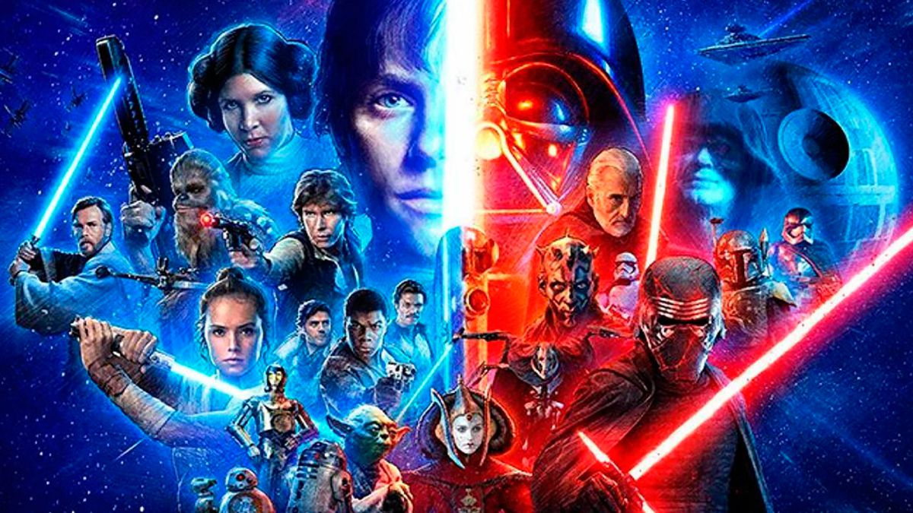

Una de las sagas de ciencia ficción más reconocidas y queridas de la historia del cine es Star Wars. La saga
creada por George Lucas cuenta la historia de un mundo fantástico ambientado en una galaxia muy,
muy lejana donde ha existido durante mucho tiempo un conflicto entre el bien y el mal.

El conflicto entre el Imperio Galáctico y la Alianza Rebelde es el tema principal de Star Wars. Una coalición de
planetas e individuos conocida como la Alianza Rebelde tiene como objetivo derrocar al Imperio e imponer un
sistema de libertad y justicia en toda la galaxia. El Imperio Galáctico, por otro lado,
tiene como objetivo establecer un gobierno totalitario y controlar toda la galaxia.
En la escena inicial de "Star Wars: Episodio IV - Una nueva esperanza", conocemos por primera vez al joven
huérfano Luke Skywalker, que reside en el árido planeta Tatooine. Luke une fuerzas con la princesa Leia Organa,
jefa de la Alianza Rebelde, y el contrabandista Han Solo, junto con sus amigos Chewbacca, un wookie y los
droides R2-D2 y C-3PO, para luchar contra el Imperio y acabar
con su arma. La Estrella de la Muerte es la más poderosa.

La Alianza Rebelde y el Imperio continúan luchando en la siguiente película, "Star Wars: Episodio V - El Imperio
Contraataca"
, y finalmente se revela la identidad de Darth Vader, el principal antagonista de la serie. Han Solo es hecho
prisionero por el
Imperio cuando Luke Skywalker comienza su entrenamiento Jedi con el legendario Maestro Jedi Yoda."Star Wars:
Episodio VI - El retorno del Jedi",
la tercera película de la trilogía original, describe el conflicto final entre la Alianza Rebelde y el Imperio.
El verdadero gobernante del Imperio,
el Emperador Palpatine, llega a la Estrella de la Muerte para supervisar la destrucción de la Alianza Rebelde,
pero Luke Skywalker lo domina, quien luego se convierte en un Jedi completo.
Cuando la película llega a su fin, la galaxia se llena de celebraciones por la victoria de la Alianza Rebelde.

Después de la trilogía original, se lanzaron tres películas de precuela que cuentan la historia del personaje
principal,
Anakin Skywalker, y cómo llegó a ser Darth Vader. El joven Anakin Skywalker se muestra en "Star Wars: Episodio
I - La amenaza fantasma"
aprendiendo los caminos de los Jedi bajo la guía de Qui-Gon Jinn. "Star Wars: Episodio II - El ataque de los
clones" y "Star Wars: Episodio III
- La venganza de los Sith" siguen a Anakin mientras se convierte en Darth Vader y se involucra en un conflicto
con la Alianza Rebelde en el futuro.
Tras la primera trilogía, recientemente se han estrenado nuevas películas que continúan la trama. A medida que
continúa el conflicto entre la Resistencia
y la Primera Orden, el reemplazo del Imperio, en "Star Wars: El despertar de la fuerza", se presentan nuevos
personajes como Rey, Finn y Kylo Ren.
Guerra de las Galaxias: La Final.